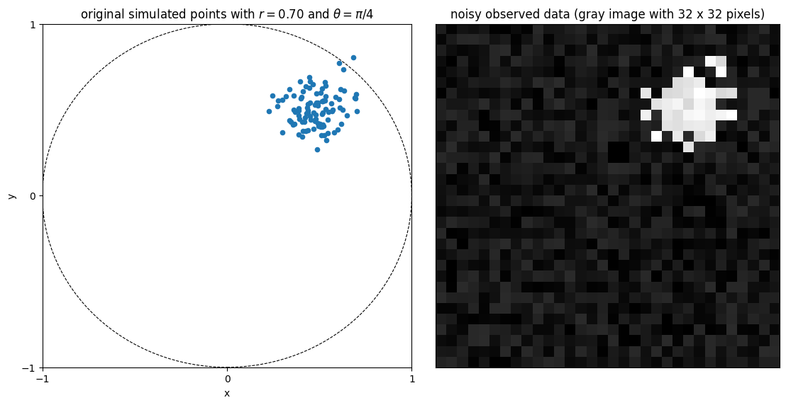
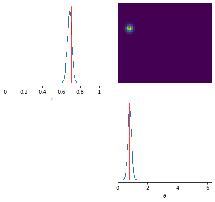

Learning summary statistics with a neural net¶
When doing simulation-based inference, it is very important to use well-chosen summary statistics for describing the data generated by the simulator. Very often, these statistics take into account previous domain knowledge. For instance, in the case of the Hodgkin-Huxley model from this tutorial, the summary statistics are defined via the function defined in here, which takes a 120 ms recording as input (a 12000-dimensional input vector) and outputs a 7-dimensional feature vector containing different statistical descriptors of the recording (e.g., number of spikes, average value, etc.). However, in some occasions, it might be of interest to actually learn from the data which summary statistics to use.
sbi offers functionality to learn summary statistics from (potentially high-dimensional) simulation outputs with a neural network. In sbi, this neural network is referred to as embedding_net. If an embedding_net is specified, the simulation outputs are passed through the embedding_net, whose outputs are then passed to the neural density estimator. The parameters of the embedding_net are updated together with the parameters of the neural density estimator.
NB: only SNPE and SNRE methods can use an embedding_net to learn summary statistics from simulation outputs. SNLE does not offer this functionality since the simulation outputs \(x\) are the outputs of the neural density estimator in SNLE.
In the example that follows, we illustrate a situation where the data points generated by the simulator model are high-dimensional (32 by 32 images) and we use a convolutional neural network as summary statistics extractor.
Note, you find the original version of this notebook at https://github.com/mackelab/sbi/blob/main/tutorial/05_embedding_net.ipynb in the sbi repository.
First of all, we import all the packages required for running the tutorial
import matplotlib.pyplot as plt
import numpy as np
import torch
import torch.nn as nn
import torch.nn.functional as F
from sbi import utils
from sbi import inference
import numpy as np
# set seed for numpy and torch
seed = 42
np.random.seed(seed)
torch.manual_seed(seed)
<torch._C.Generator at 0x7fdae4036830>
The simulator model¶
The simulator model that we consider has two parameters: \(r\) and \(\theta\). On each run, it generates 100 two-dimensional points centered around \((r \cos(\theta), r \sin(\theta))\) and perturbed by a Gaussian noise with variance 0.01. Instead of simply outputting the \((x,y)\) coordinates of each data point, the model generates a grayscale image of the scattered points with dimensions 32 by 32. This image is further perturbed by an uniform noise with values betweeen 0 and 0.2. The code below defines such model.
def simulator_model(parameter, return_points=False):
""" Simulator model with two-dimensional input parameter and 1024-dimensional output
This simulator serves as a basic example for using a neural net for learning summary features.
It has only two input parameters but generates high-dimensional output vectors.
The data is generated as follows:
(-) Input: parameter = [r, theta]
(1) Generate 100 two-dimensional points centered around (r cos(theta),r sin(theta))
and perturbed by a Gaussian noise with variance 0.01
(2) Create a grayscale image I of the scattered points with dimensions 32 by 32
(3) Perturb I with an uniform noise with values betweeen 0 and 0.2
(-) Output: I
Parameters
----------
parameter : array-like, shape (2)
The two input parameters of the model, ordered as [r, theta]
return_points : bool (default: False)
Whether the simulator should return the coordinates of the simulated data points as well
Returns
-------
I: torch tensor, shape (1, 1024)
Output flattened image
(optional) points: array-like, shape (100, 2)
Coordinates of the 2D simulated data points
"""
r = parameter[0]
theta = parameter[1]
sigma_points = 0.10
npoints = 100
points = []
for _ in range(npoints):
x = r * np.cos(theta) + sigma_points * np.random.randn()
y = r * np.sin(theta) + sigma_points * np.random.randn()
points.append([x, y])
points = np.array(points)
nx = 32
ny = 32
sigma_image = 0.20
I = np.zeros((nx, ny))
for point in points:
pi = int((point[0] - (-1)) / ((+1) - (-1)) * nx)
pj = int((point[1] - (-1)) / ((+1) - (-1)) * ny)
if (pi < nx) and (pj < ny):
I[pi, pj] = 1
I = I + sigma_image * np.random.rand(nx, ny)
I = I.T
I = I.reshape(1,-1)
I = torch.tensor(I, dtype=torch.get_default_dtype())
if return_points:
return I, points
else:
return I
The figure below shows an example of the output of the simulator when \(r = 0.70\) and \(\theta = \pi/4\)
# simulate samples
true_parameter = torch.tensor([0.70, np.pi/4])
x_observed, x_points = simulator_model(true_parameter, return_points=True)
# plot the observation
fig, ax = plt.subplots(facecolor='white', figsize=(11.15, 5.61), ncols=2, constrained_layout=True)
circle = plt.Circle((0, 0), 1.0, color='k', ls='--', lw=0.8, fill=False)
ax[0].add_artist(circle)
ax[0].scatter(x_points[:,0], x_points[:,1], s=20)
ax[0].set_xlabel('x')
ax[0].set_ylabel('y')
ax[0].set_xlim(-1, +1)
ax[0].set_xticks([-1, 0.0, +1.0])
ax[0].set_ylim(-1, +1)
ax[0].set_yticks([-1, 0.0, +1.0])
ax[0].set_title(r'original simulated points with $r = 0.70$ and $\theta = \pi/4$')
ax[1].imshow(x_observed.view(32, 32), origin='lower', cmap='gray')
ax[1].set_xticks([]); ax[1].set_yticks([])
ax[1].set_title('noisy observed data (gray image with 32 x 32 pixels)')
Text(0.5, 1.0, 'noisy observed data (gray image with 32 x 32 pixels)')

Defining an embedding_net¶
An inference procedure applied to the output data from this simulator model determines the posterior distribution of \(r\) and \(\theta\) given an observation of \(x\), which lives in a 1024 dimensional space (32 x 32 = 1024). To avoid working directly on these high-dimensional vectors, one can use a convolutional neural network (CNN) that takes the 32x32 images as input and encodes them into 8-dimensional feature vectors. This CNN is trained along with the neural density estimator of the inference procedure and serves as an automatic summary statistics extractor.
We define and instantiate the CNN as follows:
class SummaryNet(nn.Module):
def __init__(self):
super().__init__()
# 2D convolutional layer
self.conv1 = nn.Conv2d(in_channels=1, out_channels=6, kernel_size=5, padding=2)
# Maxpool layer that reduces 32x32 image to 4x4
self.pool = nn.MaxPool2d(kernel_size=8, stride=8)
# Fully connected layer taking as input the 6 flattened output arrays from the maxpooling layer
self.fc = nn.Linear(in_features=6*4*4, out_features=8)
def forward(self, x):
x = x.view(-1, 1, 32, 32)
x = self.pool(F.relu(self.conv1(x)))
x = x.view(-1, 6*4*4)
x = F.relu(self.fc(x))
return x
embedding_net = SummaryNet()
The inference procedure¶
With the embedding_net defined and instantiated, we can follow the usual workflow of an inference procedure in sbi. The embedding_net object appears as an input argument when instantiating the neural density estimator with utils.posterior_nn.
# set prior distribution for the parameters
prior = utils.BoxUniform(low=torch.tensor([0.0, 0.0]),
high=torch.tensor([1.0, 2*np.pi]))
# make a SBI-wrapper on the simulator object for compatibility
simulator_wrapper, prior = inference.prepare_for_sbi(simulator_model, prior)
# instantiate the neural density estimator
neural_posterior = utils.posterior_nn(model='maf',
embedding_net=embedding_net,
hidden_features=10,
num_transforms=2)
# setup the inference procedure with the SNPE-C procedure
inference = inference.SNPE(simulator_wrapper, prior,
density_estimator=neural_posterior,
show_progress_bars=True)
# run the inference procedure on one round and 10000 simulated data points
posterior = inference(num_simulations=10000)
HBox(children=(FloatProgress(value=0.0, description='Running 10000 simulations.', max=10000.0, style=ProgressS…
Neural network successfully converged after 132 epochs.
Visualizing the results¶
We now generate 50000 samples of the posterior distribution of \(r\) and \(\theta\) when observing an input data point \(x\) generated from the simulator model with \(r = 0.70\) and \(\theta = \pi/4\).
# generate posterior samples
true_parameter = torch.tensor([0.70, np.pi/4])
x_observed = simulator_model(true_parameter)
samples = posterior.set_default_x(x_observed).sample((50000,))
HBox(children=(FloatProgress(value=0.0, description='Drawing 50000 posterior samples', max=50000.0, style=Prog…
The figure below shows the statistics of the generated samples.
# create the figure
fig, ax = utils.pairplot(samples,
points=true_parameter,
labels=['r', r'$\theta$'],
limits=[[0, 1], [0, 2*np.pi]],
points_colors='r',
points_offdiag={'markersize': 6},
fig_size=[7.5, 6.4])
